library(geobr)
library(cowplot)
library(sf)
library(tidyverse)
library(viridis)
library(sfhotspot)
library(units)
library(lwgeom) # otimizar junção dos grids
library(plotly)
data_PE <- read.csv("~/pear/data_PE.csv", dec = ",") # 262mil ocorrencias de todas as espécies via GBIF
adapta_pe<-read.csv("~/pear/DadosBiod.csv", sep = ";", dec = ",") # Dados do Adapta Brasil sobre Integridade dos Biomas
adapta_pe %>%
as_tibble() %>%
rename(code_muni=geocod_ibge) %>%
filter(code_muni!= "2605459") ->adapta_pePEAR - Biodiversidade & Ecossistemas
Respositório github para estas análises
Carregar dados e blibliotecas
Carregando bases espaciais dos municípios de PE
Usamos o pacote geobr para contruir os mapas que serão usados para ilustrar os resultados espaccialmente.
# # Correr os códigos abaixo somente uma vez
# muni_pe <- read_municipality(
# code_muni = "PE",
# year= 2022,
# showProgress = FALSE,
# simplified = FALSE
# )
# class(muni_pe)
#
# write_sf(muni_pe,"muni_pe.gpkg")
muni_pe<-st_read("muni_pe.gpkg")Reading layer `muni_pe' from data source `/home/felipe/pear/muni_pe.gpkg' using driver `GPKG'
Simple feature collection with 185 features and 7 fields
Geometry type: MULTIPOLYGON
Dimension: XY
Bounding box: xmin: -41.35834 ymin: -9.482897 xmax: -32.37777 ymax: -3.804622
Geodetic CRS: SIRGAS 2000muni_pe<-muni_pe[muni_pe$code_muni != "2605459", ] # retirar Fernando de NoronhaGráfico teste
Um gráfico teste para unir os municípios de PE e os registros de espécies compilados no GBIF. Esses dados serão posteriormente usados para interpretar o risco à biodiversidade e ecossistemas e separar zonas mais ou menos amostradas quanto à biodiversidade.
# plot unindo registros do GBIF e
ggplot() +
geom_sf(data=muni_pe, fill="#2D3E50", color="#FEBF57", size=.15, show.legend = FALSE) +
coord_sf(xlim = c(-42, -34), ylim = c(-7, -10))+
geom_point(data = data_PE,aes(x=decimalLongitude, y=decimalLatitude),color = "red", alpha = 0.2)+
theme_minimal()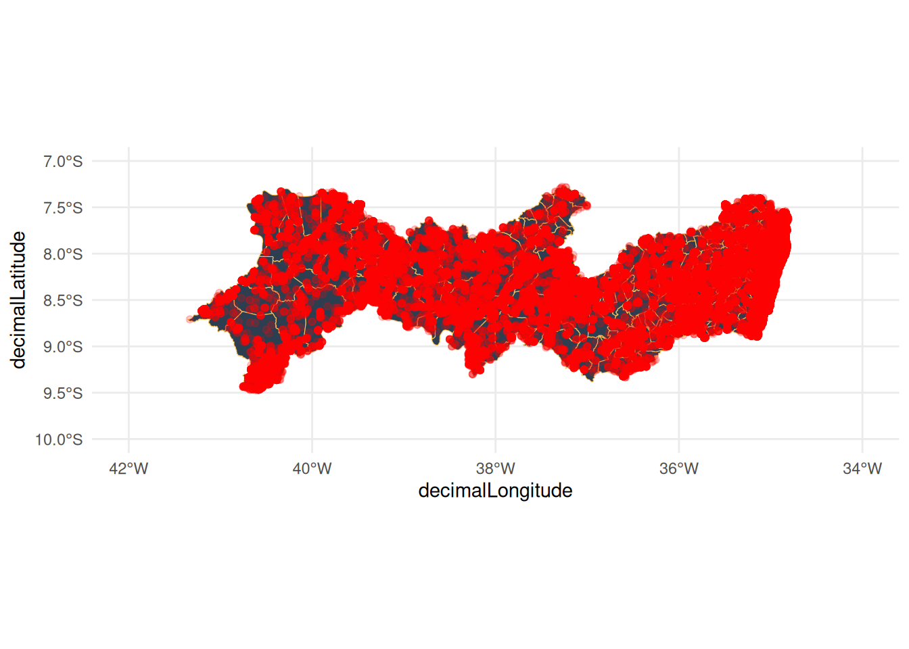
## Registros por município
data_PE %>%
select(decimalLatitude,decimalLongitude) %>%
mutate(id_points = as.character(1:n()))->sp_coord
muni_pe <- st_as_sf(muni_pe, crs = 4326) # convert to sf object
sp_coord<-st_as_sf(data_PE, coords = c( "decimalLongitude", "decimalLatitude"), crs = 4326)
sp_coord <- st_transform(sp_coord, st_crs(muni_pe))
st_crs(sp_coord) # SIRGAS 2000Coordinate Reference System:
User input: SIRGAS 2000
wkt:
GEOGCRS["SIRGAS 2000",
DATUM["Sistema de Referencia Geocentrico para las AmericaS 2000",
ELLIPSOID["GRS 1980",6378137,298.257222101,
LENGTHUNIT["metre",1]]],
PRIMEM["Greenwich",0,
ANGLEUNIT["degree",0.0174532925199433]],
CS[ellipsoidal,2],
AXIS["geodetic latitude (Lat)",north,
ORDER[1],
ANGLEUNIT["degree",0.0174532925199433]],
AXIS["geodetic longitude (Lon)",east,
ORDER[2],
ANGLEUNIT["degree",0.0174532925199433]],
USAGE[
SCOPE["Horizontal component of 3D system."],
AREA["Latin America - Central America and South America - onshore and offshore. Brazil - onshore and offshore."],
BBOX[-59.87,-122.19,32.72,-25.28]],
ID["EPSG",4674]]st_crs(muni_pe)# SIRGAS 2000 As duas OKCoordinate Reference System:
User input: SIRGAS 2000
wkt:
GEOGCRS["SIRGAS 2000",
DATUM["Sistema de Referencia Geocentrico para las AmericaS 2000",
ELLIPSOID["GRS 1980",6378137,298.257222101,
LENGTHUNIT["metre",1]]],
PRIMEM["Greenwich",0,
ANGLEUNIT["degree",0.0174532925199433]],
CS[ellipsoidal,2],
AXIS["geodetic latitude (Lat)",north,
ORDER[1],
ANGLEUNIT["degree",0.0174532925199433]],
AXIS["geodetic longitude (Lon)",east,
ORDER[2],
ANGLEUNIT["degree",0.0174532925199433]],
USAGE[
SCOPE["Horizontal component of 3D system."],
AREA["Latin America - Central America and South America - onshore and offshore. Brazil - onshore and offshore."],
BBOX[-59.87,-122.19,32.72,-25.28]],
ID["EPSG",4674]]sp_coord$geometry # 262.332 pontos válidosGeometry set for 262332 features
Geometry type: POINT
Dimension: XY
Bounding box: xmin: -41.33322 ymin: -9.474889 xmax: -32.38081 ymax: -3.807668
Geodetic CRS: SIRGAS 2000
First 5 geometries:muni_pe$geom # 184 municípiosGeometry set for 184 features
Geometry type: MULTIPOLYGON
Dimension: XY
Bounding box: xmin: -41.35834 ymin: -9.482897 xmax: -34.80669 ymax: -7.272954
Geodetic CRS: SIRGAS 2000
First 5 geometries:sp_counts_mun <- hotspot_count(sp_coord, grid = muni_pe) # 12,908 point is outside the area covered by the supplied polygons. Imprecisão dos datums?
sum(sp_counts_mun$n) # 258244 registros. É bastente[1] 249343glimpse(sp_counts_mun) # OK para registrosRows: 184
Columns: 9
$ code_muni <dbl> 2600054, 2600104, 2600203, 2600302, 2600401, 2600500, 260…
$ name_muni <chr> "Abreu E Lima", "Afogados da Ingazeira", "Afrânio", "Agre…
$ code_state <dbl> 26, 26, 26, 26, 26, 26, 26, 26, 26, 26, 26, 26, 26, 26, 2…
$ abbrev_state <chr> "PE", "PE", "PE", "PE", "PE", "PE", "PE", "PE", "PE", "PE…
$ name_state <chr> "Pernambuco", "Pernambuco", "Pernambuco", "Pernambuco", "…
$ code_region <dbl> 2, 2, 2, 2, 2, 2, 2, 2, 2, 2, 2, 2, 2, 2, 2, 2, 2, 2, 2, …
$ name_region <chr> "Nordeste", "Nordeste", "Nordeste", "Nordeste", "Nordeste…
$ n <int> 3371, 75, 843, 758, 734, 398, 147, 5286, 560, 135, 7, 247…
$ geometry <MULTIPOLYGON [°]> MULTIPOLYGON (((-34.91405 -..., MULTIPOLYGON…sp_counts_mun %>%
mutate(area_muni_km2=st_area(sp_counts_mun$geometry)/1000000) %>% # calcular área dos municípios
mutate(sp_per_area=n/area_muni_km2) %>% # espécies por KM²
filter(code_muni!= "2605459")->sp_counts_mun
sp_counts_mun %>%
mutate(rds=adapta_pe$rds) %>%
mutate(sp_per_area=as.numeric(sp_per_area))->sp_counts_munDados descritivos para biodiversidade
sp_coord %>%
group_by(kingdom) %>%
summarise(n())Simple feature collection with 5 features and 2 fields
Geometry type: MULTIPOINT
Dimension: XY
Bounding box: xmin: -41.33322 ymin: -9.474889 xmax: -32.38081 ymax: -3.807668
Geodetic CRS: SIRGAS 2000
# A tibble: 5 × 3
kingdom `n()` geometry
<chr> <int> <MULTIPOINT [°]>
1 Animalia 186485 ((-32.40694 -3.854444), (-32.40705 -3.855881), (-32.40805 -3…
2 Bacteria 32 ((-36.48306 -8.949722), (-37.45 -8.599722), (-38.5 -8), (-37…
3 Chromista 87 ((-32.40111 -3.856667), (-32.41056 -3.840278), (-32.41528 -3…
4 Fungi 4406 ((-32.42379 -3.853808), (-32.42556 -3.865992), (-32.42594 -3…
5 Plantae 71322 ((-32.40028 -3.856944), (-32.40111 -3.856667), (-32.40139 -3…sp_counts_mun %>%
select(name_muni, sp_per_area, n) %>%
filter(n<100) %>%
arrange(n)Simple feature collection with 57 features and 3 fields
Geometry type: MULTIPOLYGON
Dimension: XY
Bounding box: xmin: -40.86179 ymin: -9.225121 xmax: -35.03658 ymax: -7.27416
Geodetic CRS: SIRGAS 2000
# A tibble: 57 × 4
name_muni sp_per_area n geometry
<chr> <dbl> <int> <MULTIPOLYGON [°]>
1 Santa Maria do Cambucá 0.0324 3 (((-35.89174 -7.779958, -35.8935 -7…
2 Tuparetama 0.0158 3 (((-37.24368 -7.729325, -37.24065 -…
3 Ibirajuba 0.0210 4 (((-36.11584 -8.5784, -36.13687 -8.…
4 Machados 0.0646 4 (((-35.47499 -7.677582, -35.51584 -…
5 Salgadinho 0.0457 4 (((-35.628 -7.942101, -35.62775 -7.…
6 Solidão 0.0288 4 (((-37.62439 -7.63224, -37.62418 -7…
7 Casinhas 0.0430 5 (((-35.70937 -7.817412, -35.71065 -…
8 Condado 0.0555 5 (((-35.06982 -7.58144, -35.06901 -7…
9 Frei Miguelinho 0.0234 5 (((-35.83614 -7.982886, -35.83342 -…
10 Calçado 0.0490 6 (((-36.33826 -8.787042, -36.32878 -…
# ℹ 47 more rowssp_counts_mun %>%
select(name_muni, sp_per_area) %>%
#filter(n>1355) %>%
arrange(sp_per_area)Simple feature collection with 184 features and 2 fields
Geometry type: MULTIPOLYGON
Dimension: XY
Bounding box: xmin: -41.35834 ymin: -9.482897 xmax: -34.80669 ymax: -7.272954
Geodetic CRS: SIRGAS 2000
# A tibble: 184 × 3
name_muni sp_per_area geometry
<chr> <dbl> <MULTIPOLYGON [°]>
1 Tuparetama 0.0158 (((-37.24368 -7.729325, -37.24065 -7.7357…
2 Capoeiras 0.0177 (((-36.59868 -8.769434, -36.59727 -8.7699…
3 Ibirajuba 0.0210 (((-36.11584 -8.5784, -36.13687 -8.565513…
4 Frei Miguelinho 0.0234 (((-35.83614 -7.982886, -35.83342 -7.9825…
5 Solidão 0.0288 (((-37.62439 -7.63224, -37.62418 -7.63204…
6 Santa Maria do Cambucá 0.0324 (((-35.89174 -7.779958, -35.8935 -7.78367…
7 Santa Terezinha 0.0348 (((-37.50034 -7.408593, -37.50135 -7.4114…
8 Casinhas 0.0430 (((-35.70937 -7.817412, -35.71065 -7.8174…
9 Salgadinho 0.0457 (((-35.628 -7.942101, -35.62775 -7.942909…
10 Carnaíba 0.0489 (((-37.74316 -7.877418, -37.73124 -7.902,…
# ℹ 174 more rowsEsforço de coleta por RDS de PE
Temos, no geral um esforço de coleta baixo para PE em geral, com poucos registros por município e a região metropolitana (MET) é a mais bem amostrada. Destaque para o SFR, pouquíssimo amostrada na média.
sp_counts_mun %>%
as_tibble() %>%
left_join(adapta_pe[,-3], by="code_muni") %>%
#group_by(rds) %>%
#summarise(media = mean(sp_per_area), sd = sd(sp_per_area)) %>%
#arrange(desc(media)) %>%
#mutate(rds = fct_reorder(rds, mean(sp_per_area))) %>%
ggplot(aes(rds,log(sp_per_area)))+
geom_jitter(size=1)+
geom_errorbar(stat = "summary", fun.data = mean_cl_boot, width = 0.4)+
geom_point(size = 4, stat = "summary", fun = mean, shape = 1) +
#geom_errorbar(aes(ymin=media-sd, ymax=media+sd), width=.5,
# position=position_dodge(0.05))+
labs(x= "Região de Desenvolvimento Socioeconômico", y="Número médio de registros de espécies / km²")+
geom_hline(yintercept = mean(log(sp_counts_mun$sp_per_area)), col = "red", linetype="dashed")+
theme_bw()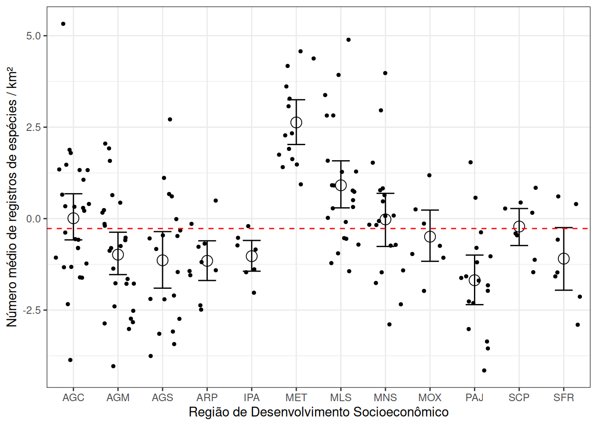
Dados de registros de espécies por município (fonte: GBIF)
# Gráficos e Mapas com a base completa biodiversidade
ggplot()+
geom_sf(data=sp_counts_mun, aes(fill=log(n+1), show.legend = TRUE)) +
scale_fill_viridis(name="")+
labs(title = "Número de registros de espécies por km²")->map_sp_area
map_sp_area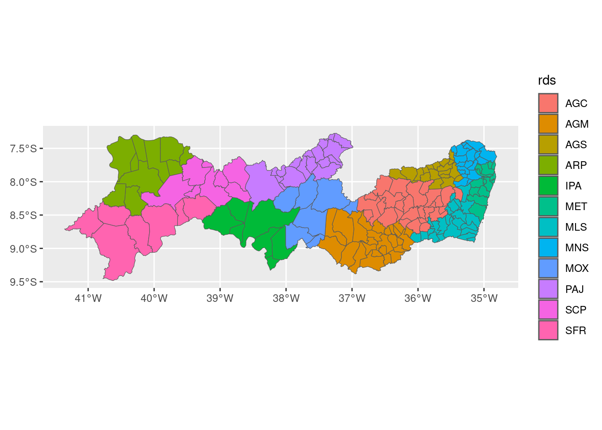
Análise de risco climático para área temática de Biodievrsidade e Ecossistemas
Dados provenientes do Adapta Brasil
dados_comp_geom<-left_join(muni_pe[,c(1,8)],adapta_pe, by="code_muni")
dados_comp_geom %>%
group_by(rds) %>%
summarise(across(geom, ~ st_combine(.)), .groups = "keep")->geom_rds # Funde bases de forma que as categorias de RDS são incluídas numa única base
ggplot(data=geom_rds)+geom_sf(aes(fill=rds)) # só checando se está correto. OK
centroids_rds <- geom_rds %>%
st_make_valid() %>%
st_centroid() Análise de Vulnerabilidade
Grau de suscetibilidade do bioma a uma determinada ameaça climática. A vulnerabilidade refere-se às características que um determinado ecossistema possui que refletem à suscetibilidade dele em relação às variações climáticas que podem afetar, direta ou indiretamente, a integridade do bioma. A vulnerabilidade está vinculada a situação de sensibilidade e capacidade adaptativa desse sistema, ou seja, se baseia em fatores conjunturais existentes antes do impacto climático. (fonte: AdaptaBrasil)
Sensibilidade do bioma
Grau de alteração potencial do estado que o ecossistema pode sofrer, direta ou indiretamente, uma vez em contato com as variações climáticas que afetam a integridade do bioma. A sensibilidade é uma propriedade inerente a um ecossistema, existente antes da ameaça climática e independente (separada) da exposição. O Índice de Sensibilidade é composto pelos indicadores temáticos: Mudança e uso do solo, Cobertura do solo, Densidade populacional e de estabelecimentos, e Infraestrutura.
## Sensibilidade
library(RColorBrewer)
cores_fixas <- c("Muito Baixo" = "#02c650", "Baixo" = "#a9de00", "Médio" = "#ffcd00", "Alto" = "#ff8300", "Muito Alto" = "#f40000")
dados_comp_geom %>%
mutate(categ=case_when(
sensib <0.2 ~ "Muito Baixo",
sensib >=0.2 & sensib < 0.4 ~ "Baixo",
sensib >=0.4 & sensib < 0.6 ~ "Médio",
sensib >=0.6 & sensib < 0.8 ~ "Alto",
sensib >=0.8 ~ "Muito Alto",
TRUE ~ "unknown")) %>%
mutate(categ=fct_reorder(categ,sensib)) %>%
ggplot()+geom_sf(aes(fill=categ), show.legend = TRUE)+
scale_fill_manual(values =cores_fixas, name = "Categoria")+
labs(title = "Sensibilidade do Bioma")+
theme_bw()->sensib_map
sensib_map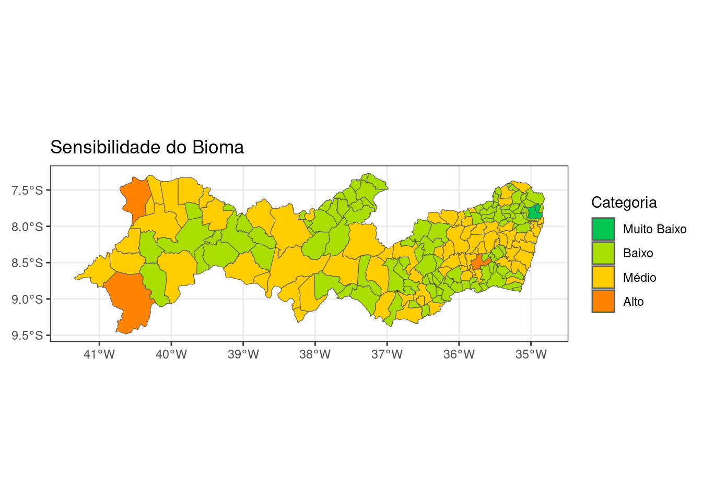
## PCA para entender componetes da sensibiidade por categoria de risco
dados_comp_geom %>%
as_tibble() %>%
mutate(categ=case_when(
sensib <0.2 ~ "Muito Baixo",
sensib >=0.2 & sensib < 0.4 ~ "Baixo",
sensib >=0.4 & sensib < 0.6 ~ "Médio",
sensib >=0.6 & sensib < 0.8 ~ "Alto",
sensib >=0.8 ~ "Muito Alto",
TRUE ~ "unknown")) %>%
mutate(categ=fct_reorder(categ,sensib)) %>%
select(starts_with("s_")|categ |rds)-> dados_sensib
pca_sensib<-prcomp(dados_sensib[,-c(5,6,7)], scale = TRUE)
summary(pca_sensib)Importance of components:
PC1 PC2 PC3 PC4
Standard deviation 1.2739 0.9933 0.8990 0.7632
Proportion of Variance 0.4057 0.2467 0.2020 0.1456
Cumulative Proportion 0.4057 0.6524 0.8544 1.0000 pca_sensib$rotation PC1 PC2 PC3 PC4
s_luc_2017 -0.5512354 0.084998041 -0.66077759 -0.5022826
s_csol_2017 -0.2310101 -0.933404921 0.20847285 -0.1786859
s_dens_pop_faz 0.6329621 0.004354507 0.05927837 -0.7718977
s_infra_2017 -0.4920700 0.348585177 0.71860846 -0.3463487pca_data_sensib<-as.data.frame(pca_sensib$x[, 1:2]) # extract first two PCs
pca_data_sensib <- cbind(pca_data_sensib, dados_sensib$categ, dados_sensib$rds) # add species to df
colnames(pca_data_sensib) <- c("PC1", "PC2", "categoria","RDS") # change column names
pca_data_sensib %>%
ggplot() +
aes(PC1, PC2, color = categoria, shape = categoria) + # define plot area
geom_point(size = 2) + # adding data points
coord_fixed()+ # fixing coordinates
stat_ellipse(geom="polygon", level=0.95, alpha=0.1) #adding a stat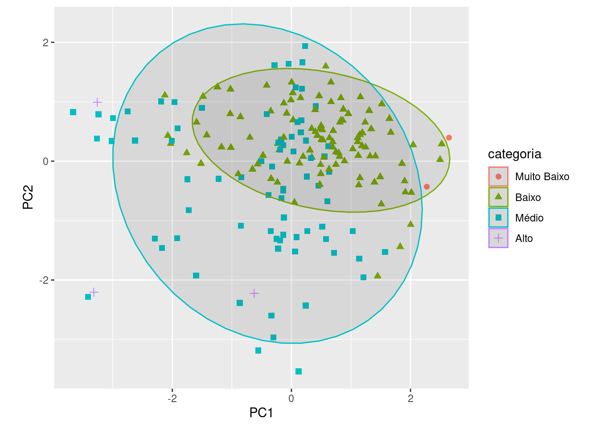
Resumo da análise de sensibilidade
Os componentes da sensibilidade são praticamente ortogonais, significando que qualquer redução na dimensionalidade é prejudicial à interpretação. O primeiro PC é o úico com valor > 1 mas os PCs 2 e 3 tem valores muito próximos de 1. Portanto, o melhor é proceder para uma análise dos componentes do índice de sensibilidade de forma separada e isolada.
Sensibilidade do bioma
Daqui por diante as análises virão com duas representações gráficoas: 1) mapa de de PE com valores por município, podendo ser valores brutos ou categóricos (categorias Adapta Brasil) e 2) Gráfico mostrando valores médios e variação por região de desenvolvimento socioeconômico (RDS).
## RDS Mapa
col.map<-c('#a6cee3','#1f78b4','#b2df8a','#33a02c','#fb9a99','#e31a1c','#fdbf6f','#ff7f00','#cab2d6','#6a3d9a','#ffff99','#b15928')
geom_rds %>%
ggplot()+geom_sf(aes(fill=rds))+
scale_fill_manual(values= col.map)+
geom_sf_label(aes(label = rds))+
theme_bw()+
theme(legend.position = "none")+
xlab("")+ylab("")->rds_map
rds_map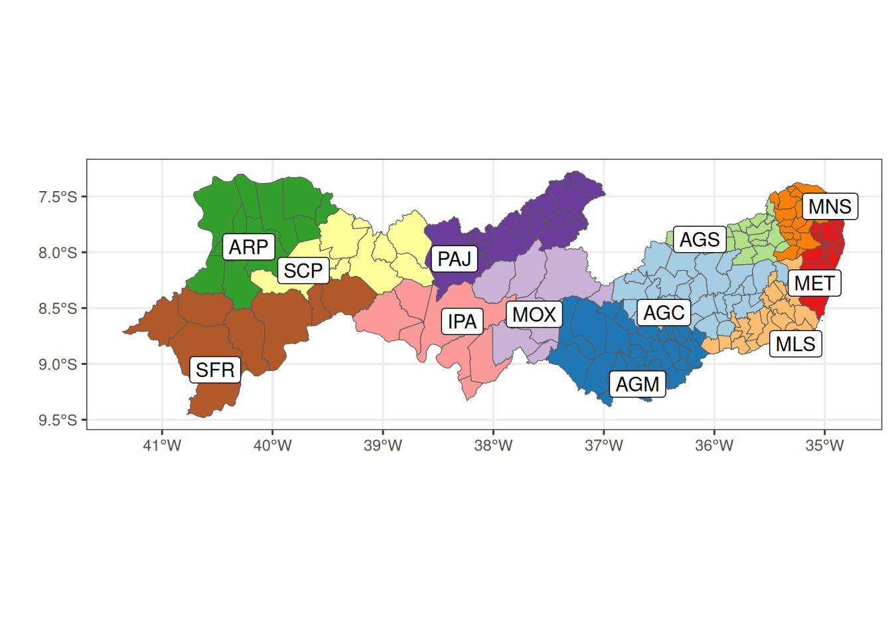
Essas são as RDs de Pernambuco
Indicador temático - Mudança e uso do solo
Indicador composto por 4 variáveis: 1-Uso de Agrotóxicos; 2- Estabelecimentos com agricultura familiar; 3- Estabalecimentos com práticas sustentáveis e 4- Frequência de focos do fogo
dados_comp_geom %>%
mutate(categ=case_when(
s_luc_2017 <0.2 ~ "Muito Baixo",
s_luc_2017 >=0.2 & s_luc_2017 < 0.4 ~ "Baixo",
s_luc_2017 >=0.4 & s_luc_2017 < 0.6 ~ "Médio",
s_luc_2017 >=0.6 & s_luc_2017 < 0.8 ~ "Alto",
s_luc_2017 >=0.8 ~ "Muito Alto")) %>%
arrange(desc(s_luc_2017)) %>%
mutate(categ = fct_reorder(categ, desc(s_luc_2017))) %>%
ggplot()+geom_sf(aes(fill=categ), show.legend = TRUE)+
scale_fill_manual(values=cores_fixas, name = "")+theme_bw()+theme(legend.position = "bottom")+
labs(title = "Sensibilidade à Mudanças no Uso de Solo")->luc_map
luc_map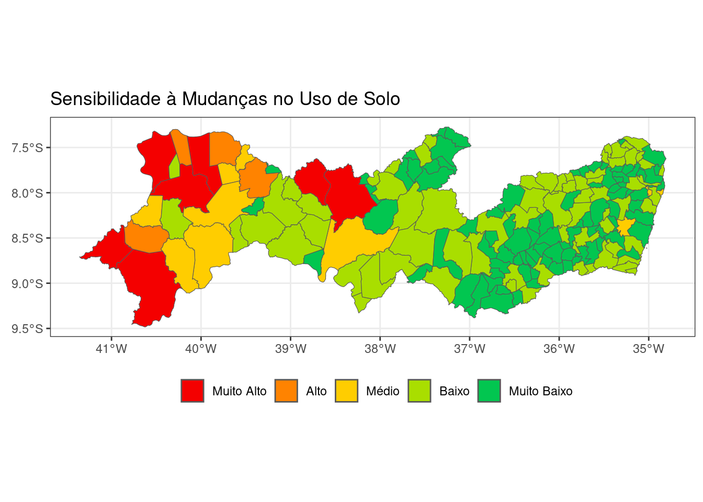
## Análise por RDS
dados_comp_geom %>%
mutate(categ=case_when(
s_luc_2017 <0.2 ~ "Muito Baixo",
s_luc_2017 >=0.2 & s_luc_2017 < 0.4 ~ "Baixo",
s_luc_2017 >=0.4 & s_luc_2017 < 0.6 ~ "Médio",
s_luc_2017 >=0.6 & s_luc_2017 < 0.8 ~ "Alto",
s_luc_2017 >=0.8 ~ "Muito Alto")) %>%
arrange(desc(s_luc_2017)) %>%
mutate(categ = fct_reorder(categ, desc(s_luc_2017))) %>%
ggplot(aes(rds,s_luc_2017))+
geom_jitter(size=1)+
geom_errorbar(stat = "summary", fun.data = mean_cl_boot, width = 0.4)+
geom_point(size = 4, stat = "summary", fun = mean, shape = 1) +
#geom_errorbar(aes(ymin=media-sd, ymax=media+sd), width=.5,
# position=position_dodge(0.05))+
labs(x= "Região de Desenvolvimento \n Socioeconômico", y="Sensibilidade à Mudanças no Uso de Solo")+
geom_hline(yintercept = mean(dados_comp_geom$s_luc_2017), col = "red", linetype="dashed")+
theme_bw()+coord_flip()->luc_graph
luc_graph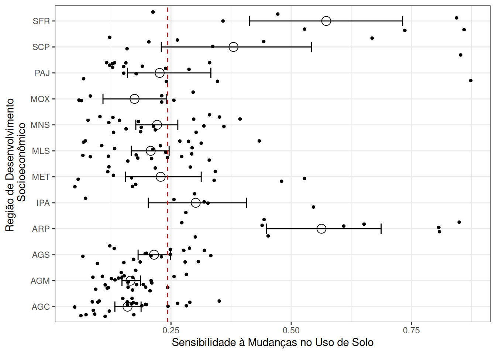
plot_grid(luc_map, luc_graph, ncol=1, align="v", rel_widths = c(1,0.6), labels = c("a","b"))->grid_map_graph
grid_map_graph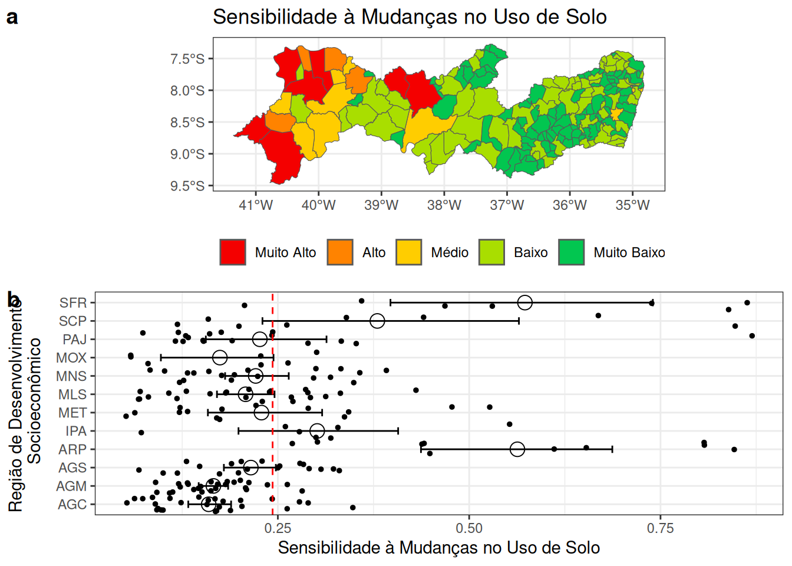
Conclusão: Há um gradiente de sensibiliadde á mudança no uso de solo que aumenta em direção ao oeste, particularmente nas RD de SFR e ARP (valores acima da média para o estado). Por outro lado, as RD de AGM e AGC e AGM (Agreste), possuem menor vulnerabilidade a essas mudanças.
Indicadores individuais - Mudança e uso do solo
dados_comp_geom %>%
as_tibble() %>%
select(starts_with("sl"), rds) %>%
rename("Uso de\nAgrotóxicos"="sl_agrotox","Ausência de\n Agricultura\nFamiliar"="sl_agr_fam", "Ausência de Práticas \nSustentáveis"="sl_prat_sust", "Risco de Fogo"="sl_fogo") %>%
pivot_longer(cols=!rds, names_to="indic", values_to="value") %>%
ggplot()+geom_density(aes(value, colour = indic, fill=indic), alpha=0.6)+
scale_fill_brewer(palette="Spectral")+
scale_color_brewer(palette="Spectral")+
facet_wrap(.~rds)+
theme_bw()+theme(legend.position = "top", legend.title = element_blank(), legend.key.size = unit(0.5, "cm") )+
labs(x="valor do índice",y="densidade") ->hist_luc_indic
hist_luc_indicWarning: Removed 1 row containing non-finite outside the scale range
(`stat_density()`).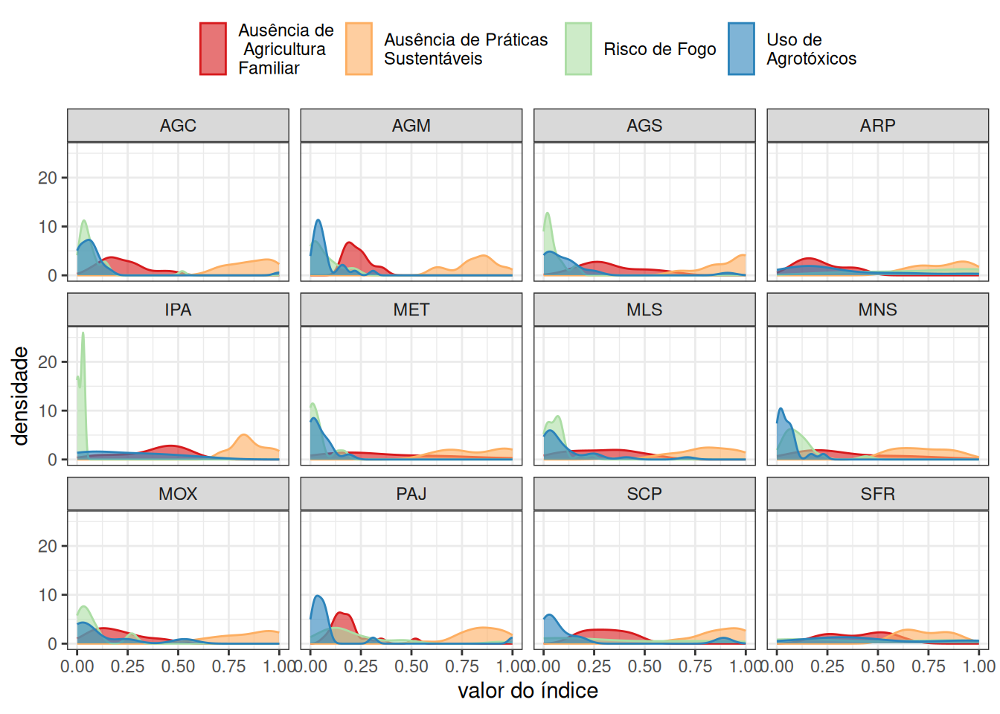
plot_grid(grid_map_graph, hist_luc_indic, ncol=2, align="vh", rel_widths = c(1,1), labels = c(" ","c"))Warning: Removed 1 row containing non-finite outside the scale range
(`stat_density()`).Warning: Graphs cannot be vertically aligned unless the axis parameter is set.
Placing graphs unaligned.Warning: Graphs cannot be horizontally aligned unless the axis parameter is
set. Placing graphs unaligned.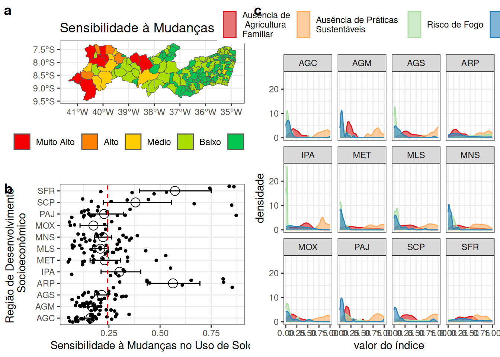
Conclusão: Com base nos indicadores individuais de Mudança e Uso de Solo é possível perceber que praticamente todos os municípios e RDs de PE não possuem práticas sustentáveis de agricultura, obtendo valores altos de sensibilidade e gerandobaixa distintção entre entidades (município ou RD). As RD do Agreste têm baixo uso de agrotóxico e baixo risco de fogo. Os altos valores de sensibilidade a mudança e uso de solo estão concentrados nas RDs de SFR, SCP e ARP, onde há municípios com maior sensisbilidade à todos os indicadores individuais.
Indicador temático - Cobertura do solo
Indicador composto por 4 variáveis: 1-Passivo ambiental; 2- Desmatamento; 3- Pastagem degradada e 4- Mineração
dados_comp_geom %>%
mutate(categ=case_when(
s_csol_2017 <0.2 ~ "Muito Baixo",
s_csol_2017 >=0.2 & s_csol_2017 < 0.4 ~ "Baixo",
s_csol_2017 >=0.4 & s_csol_2017 < 0.6 ~ "Médio",
s_csol_2017 >=0.6 & s_csol_2017 < 0.8 ~ "Alto",
s_csol_2017 >=0.8 ~ "Muito Alto")) %>%
arrange(desc(s_csol_2017)) %>%
mutate(categ = fct_reorder(categ, desc(s_csol_2017))) %>%
ggplot()+geom_sf(aes(fill=categ), show.legend = TRUE)+
scale_fill_manual(values=cores_fixas, name = "")+theme_bw()+theme(legend.position = "bottom")+
labs(title = "Sensibilidade do bioma à Cobertura do Solo")->csol_map
csol_map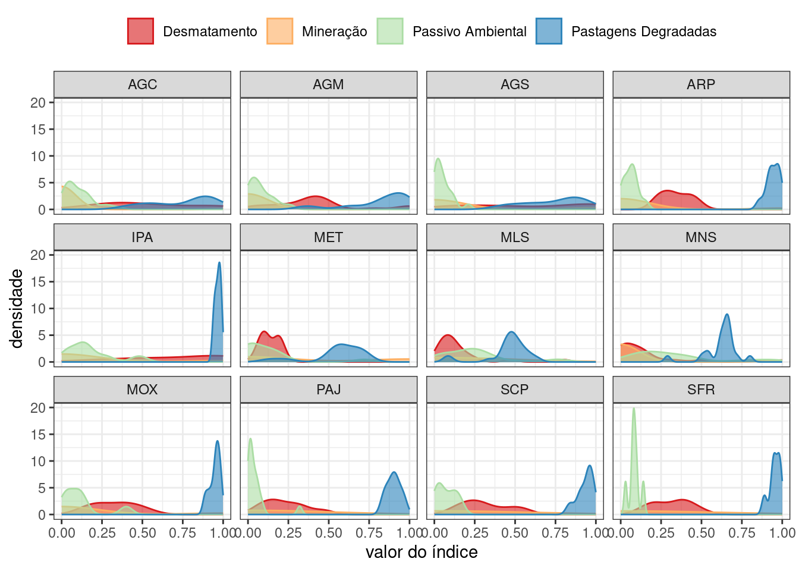
## Análise por RDS
dados_comp_geom %>%
mutate(categ=case_when(
s_csol_2017 <0.2 ~ "Muito Baixo",
s_csol_2017 >=0.2 & s_csol_2017 < 0.4 ~ "Baixo",
s_csol_2017 >=0.4 & s_csol_2017 < 0.6 ~ "Médio",
s_csol_2017 >=0.6 & s_csol_2017 < 0.8 ~ "Alto",
s_csol_2017 >=0.8 ~ "Muito Alto")) %>%
arrange(desc(s_csol_2017)) %>%
mutate(categ = fct_reorder(categ, desc(s_csol_2017))) %>%
ggplot(aes(rds,s_csol_2017))+
geom_jitter(size=1)+
geom_errorbar(stat = "summary", fun.data = mean_cl_boot, width = 0.4)+
geom_point(size = 4, stat = "summary", fun = mean, shape = 1) +
#geom_errorbar(aes(ymin=media-sd, ymax=media+sd), width=.5,
# position=position_dodge(0.05))+
labs(x= "Região de Desenvolvimento \n Socioeconômico", y="Sensibilidade à Mudanças na Cobertura do Solo")+
geom_hline(yintercept = mean(dados_comp_geom$s_csol_2017), col = "red", linetype="dashed")+
theme_bw()+coord_flip()->csol_graph
csol_graph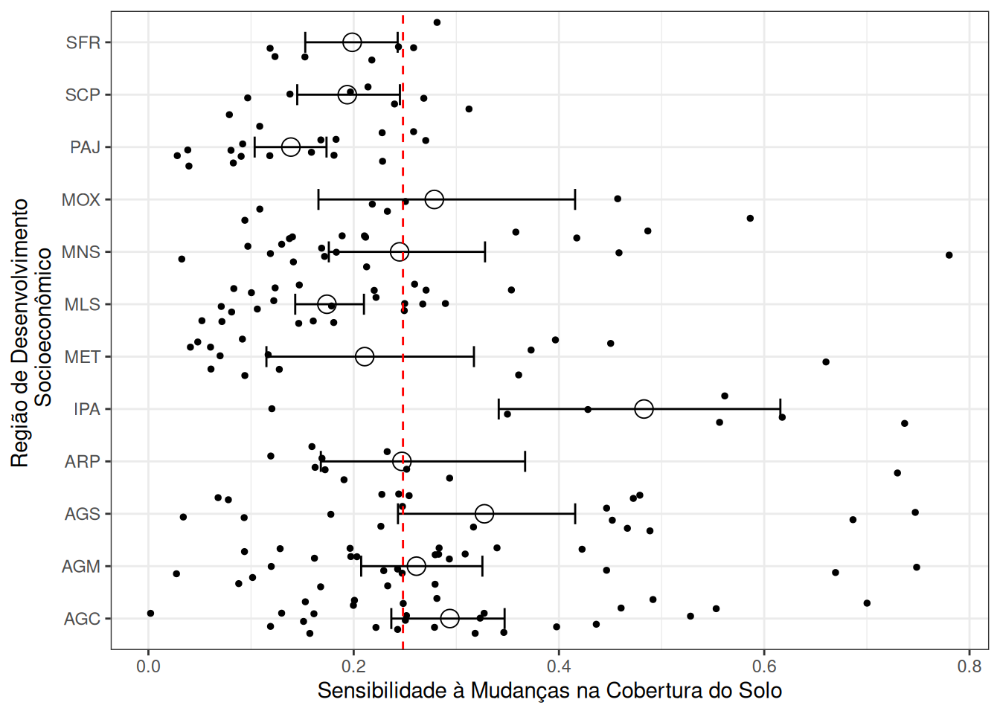
plot_grid(csol_map, csol_graph, ncol=1, align="v", rel_widths = c(1,0.6), labels = c("a","b"))->csol_grid
csol_grid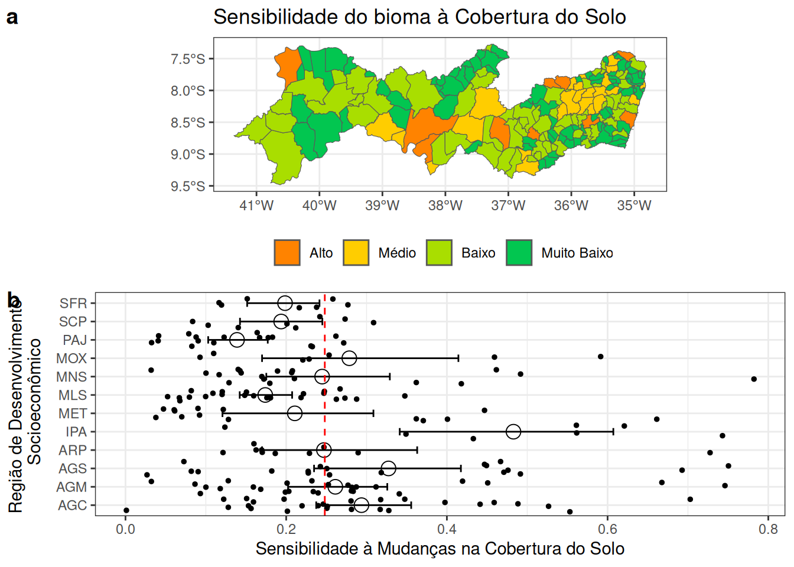
Conclusão: Não há um padrão muito claro espacial para este indicador, com exceção de alguns núcleos de alta sensibilidade espalhados pelo estado e outros de média sensibilidade. Destaque para o IPA.
Indicadores individuais - Cobertura do solo
dados_comp_geom %>%
as_tibble() %>%
select(sc_passivo:sc_miner, rds) %>%
rename("Passivo Ambiental"="sc_passivo","Desmatamento"="sc_desmat", "Pastagens Degradadas"="sc_pastag", "Mineração"="sc_miner") %>%
pivot_longer(cols=1:4, names_to="indic", values_to="value") %>%
ggplot()+geom_density(aes(value, colour = indic, fill=indic), alpha=0.6)+
scale_fill_brewer(palette="Spectral")+
scale_color_brewer(palette="Spectral")+
facet_wrap(.~rds)+
theme_bw()+theme(legend.position = "top", legend.title = element_blank())+labs(x="valor do índice",y="densidade") ->hist_cob_indic
hist_cob_indic
plot_grid(csol_grid, hist_cob_indic, ncol=2, align="vh", rel_widths = c(1,1),labels = c("","c"))Warning: Graphs cannot be vertically aligned unless the axis parameter is set.
Placing graphs unaligned.Warning: Graphs cannot be horizontally aligned unless the axis parameter is
set. Placing graphs unaligned.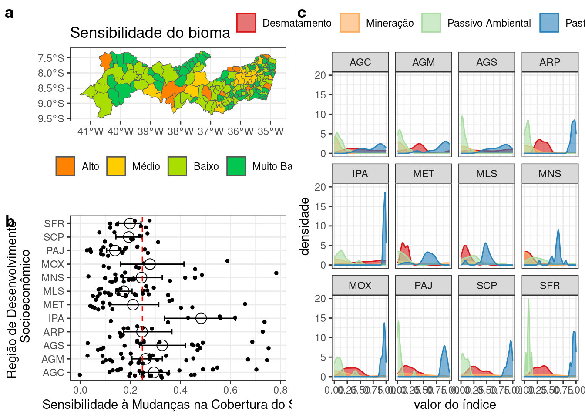
Conclusão: Com base nos indicadores individuais de Cobertura do Solo podemos verificar que praticamente toda a zona seca do estado possui pastagens degradadas. Por outro lado, o passivo ambiental é geralmente baixo, sugerindo que a maior parte dos municípios possui RL e APP conservadas (Será?). O que mais diferencia os municípios é o desmatamento, que se espalha fortemente pelo Agreste Central e Meridional (AGC e AGM) elaguns municípios do Sertão.
Indicador temático - Densidade populacional e de estabelecimentos
Indicador composto por 2 variáveis: 1-População humana; 2- Densidade de estabelecimentos agropecuária
dados_comp_geom %>%
mutate(categ=case_when(
s_dens_pop_faz <0.2 ~ "Muito Baixo",
s_dens_pop_faz >=0.2 & s_dens_pop_faz < 0.4 ~ "Baixo",
s_dens_pop_faz >=0.4 & s_dens_pop_faz < 0.6 ~ "Médio",
s_dens_pop_faz >=0.6 & s_dens_pop_faz < 0.8 ~ "Alto",
s_dens_pop_faz >=0.8 ~ "Muito Alto")) %>%
arrange(desc(s_dens_pop_faz)) %>%
mutate(categ = fct_reorder(categ, desc(s_dens_pop_faz))) %>%
ggplot()+geom_sf(aes(fill=categ), show.legend = TRUE)+
scale_fill_manual(values=cores_fixas, name = "")+theme_bw()+theme(legend.position = "bottom")+
labs(title = "Sensibilidade à Desidade Populacional e \nde Estabelecimentos Rurais")->s_dens_map
s_dens_map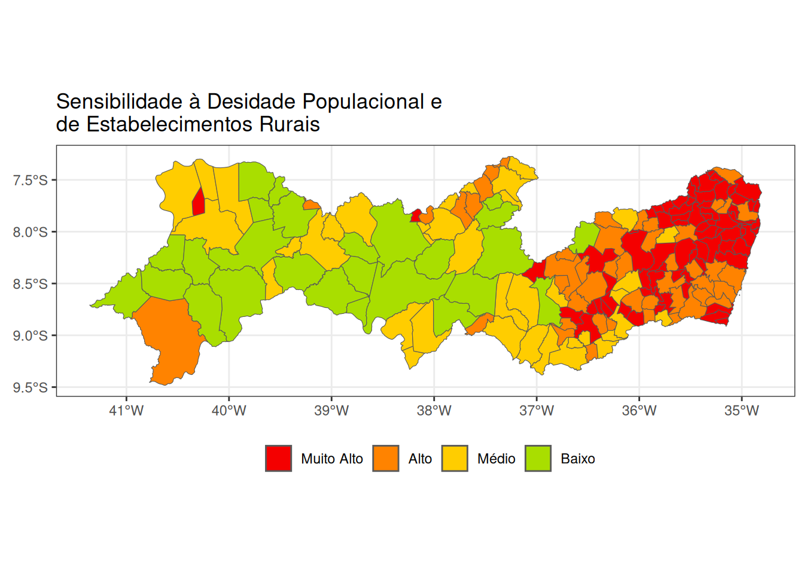
## Análise por RDS
dados_comp_geom %>%
mutate(categ=case_when(
s_dens_pop_faz <0.2 ~ "Muito Baixo",
s_dens_pop_faz >=0.2 & s_dens_pop_faz < 0.4 ~ "Baixo",
s_dens_pop_faz >=0.4 & s_dens_pop_faz < 0.6 ~ "Médio",
s_dens_pop_faz >=0.6 & s_dens_pop_faz < 0.8 ~ "Alto",
s_dens_pop_faz >=0.8 ~ "Muito Alto")) %>%
arrange(desc(s_dens_pop_faz)) %>%
mutate(categ = fct_reorder(categ, desc(s_dens_pop_faz))) %>%
ggplot(aes(rds,s_dens_pop_faz))+
geom_jitter(size=1)+
geom_errorbar(stat = "summary", fun.data = mean_cl_boot, width = 0.4)+
geom_point(size = 4, stat = "summary", fun = mean, shape = 1) +
#geom_errorbar(aes(ymin=media-sd, ymax=media+sd), width=.5,
# position=position_dodge(0.05))+
labs(x= "Região de Desenvolvimento \n Socioeconômico", y="Sensibilidade à Desidade Populacional")+
geom_hline(yintercept = mean(dados_comp_geom$s_dens_pop_faz), col = "red", linetype="dashed")+
theme_bw()+coord_flip()->s_dens_graph
s_dens_graph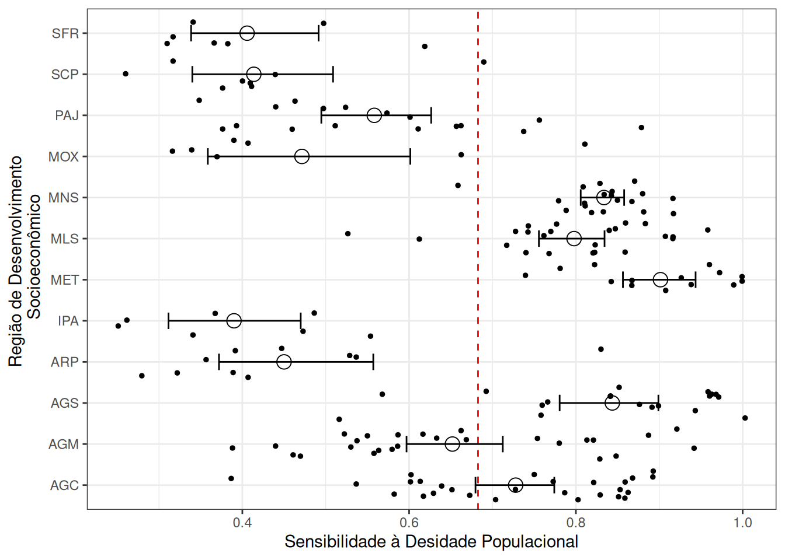
plot_grid(s_dens_map, s_dens_graph, ncol=1, align="v", rel_widths = c(1,0.6), labels = c("a","b"))->s_dens_grid
s_dens_grid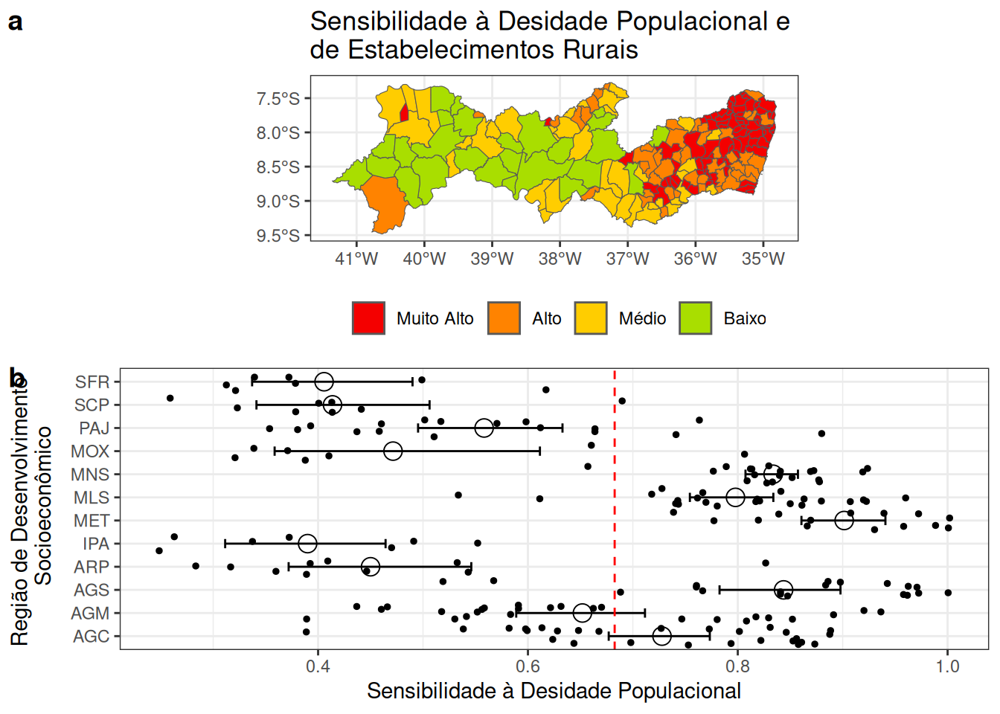
Conclusão:
Indicadores individuais - Densidade Populacional
dados_comp_geom %>%
as_tibble() %>%
select(sd_popul:sd_fazend, rds) %>%
rename("Densidade Populacional"="sd_popul","Densidade de \nEstabelecimentos Rurais"="sd_fazend") %>%
pivot_longer(cols=1:2, names_to="indic", values_to="value") %>%
ggplot()+geom_density(aes(value, colour = indic, fill=indic), alpha=0.6)+
scale_fill_brewer(palette="Set1")+
scale_color_brewer(palette="Set1")+
facet_wrap(.~rds)+
theme_bw()+theme(legend.position = "top", legend.title = element_blank())+labs(x="valor do índice",y="densidade") ->hist_dens_indic
hist_dens_indic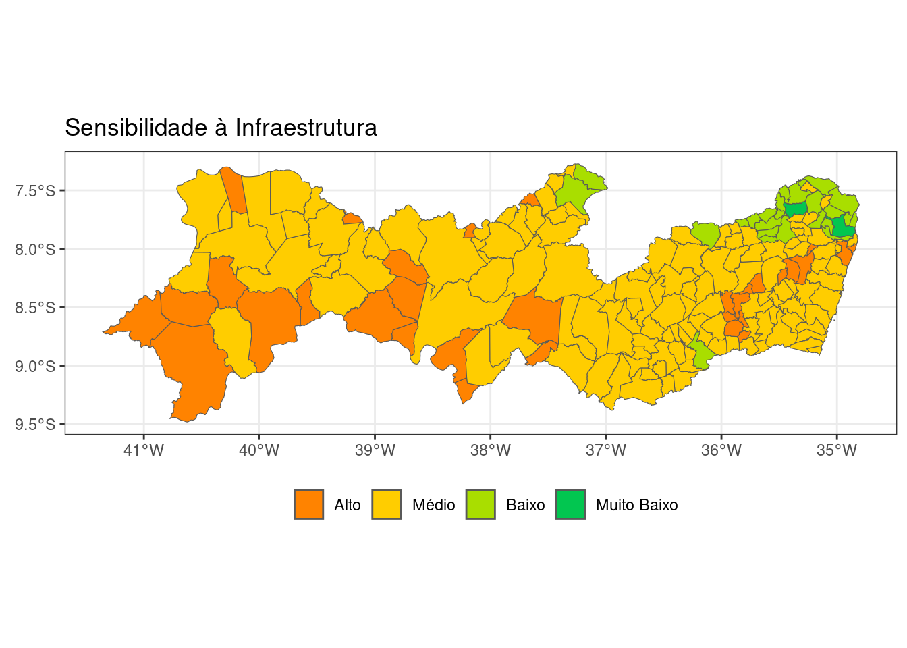
plot_grid(s_dens_grid, hist_dens_indic, ncol=2, align="vh", rel_widths = c(1,1),labels = c("","c"))Warning: Graphs cannot be vertically aligned unless the axis parameter is set.
Placing graphs unaligned.Warning: Graphs cannot be horizontally aligned unless the axis parameter is
set. Placing graphs unaligned.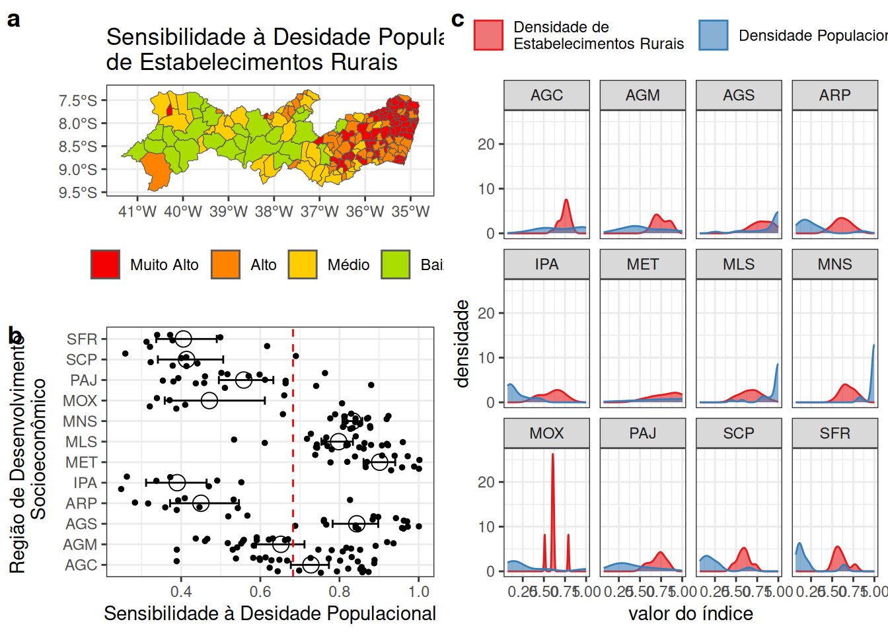
Conclusão:
Indicador temático - Infraestrutura
Indicador composto por 2 variáveis: 1- Hidroelétricas e 2 - Mineração
dados_comp_geom %>%
mutate(categ=case_when(
s_infra_2017 <0.2 ~ "Muito Baixo",
s_infra_2017 >=0.2 & s_infra_2017 < 0.4 ~ "Baixo",
s_infra_2017 >=0.4 & s_infra_2017 < 0.6 ~ "Médio",
s_infra_2017 >=0.6 & s_infra_2017 < 0.8 ~ "Alto",
s_infra_2017 >=0.8 ~ "Muito Alto")) %>%
arrange(desc(s_infra_2017)) %>%
mutate(categ = fct_reorder(categ, desc(s_infra_2017))) %>%
ggplot()+geom_sf(aes(fill=categ), show.legend = TRUE)+
scale_fill_manual(values=cores_fixas, name = "")+theme_bw()+theme(legend.position = "bottom")+
labs(title = "Sensibilidade à Infraestrutura")->s_infra_map
s_infra_map## Análise por RDS
dados_comp_geom %>%
mutate(categ=case_when(
s_infra_2017 <0.2 ~ "Muito Baixo",
s_infra_2017 >=0.2 & s_infra_2017 < 0.4 ~ "Baixo",
s_infra_2017 >=0.4 & s_infra_2017 < 0.6 ~ "Médio",
s_infra_2017 >=0.6 & s_infra_2017 < 0.8 ~ "Alto",
s_infra_2017 >=0.8 ~ "Muito Alto")) %>%
arrange(desc(s_infra_2017)) %>%
mutate(categ = fct_reorder(categ, desc(s_infra_2017))) %>%
ggplot(aes(rds,s_infra_2017))+
geom_jitter(size=1)+
geom_errorbar(stat = "summary", fun.data = mean_cl_boot, width = 0.4)+
geom_point(size = 4, stat = "summary", fun = mean, shape = 1) +
#geom_errorbar(aes(ymin=media-sd, ymax=media+sd), width=.5,
# position=position_dodge(0.05))+
labs(x= "Região de Desenvolvimento \n Socioeconômico", y="Sensibilidade à Infraestrutura")+
geom_hline(yintercept = mean(dados_comp_geom$s_infra_2017), col = "red", linetype="dashed")+
theme_bw()+coord_flip()->s_infra_graph
s_infra_graph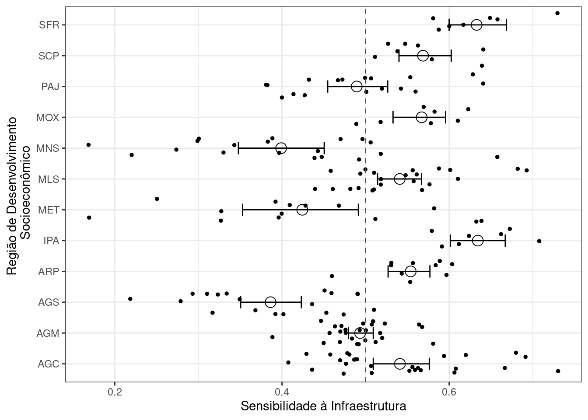
plot_grid(s_infra_map, s_infra_graph, ncol=1, align="v", rel_widths = c(1,0.6), labels = c("a","b"))->s_infra_grid
s_infra_grid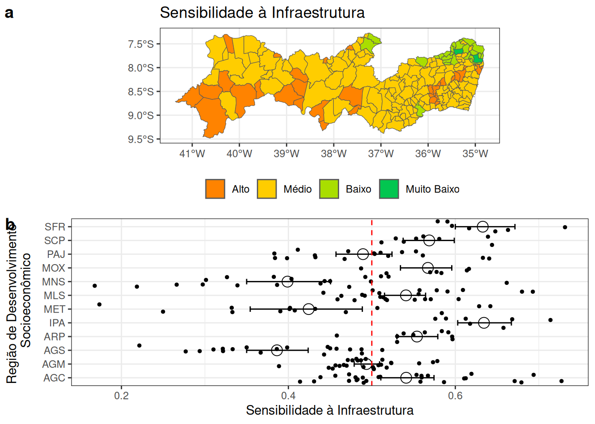
Conclusão:
Indicadores individuais - Densidade Populacional
dados_comp_geom %>%
as_tibble() %>%
select(si_rodov:si_hidro, rds) %>%
rename("Densidade de Rodovias"="si_rodov","Promimidade à Hidroelétricas"="si_hidro") %>%
pivot_longer(cols=1:2, names_to="indic", values_to="value") %>%
ggplot()+geom_density(aes(value, colour = indic, fill=indic), alpha=0.6)+
scale_fill_brewer(palette="Set1")+
scale_color_brewer(palette="Set1")+
facet_wrap(.~rds)+
theme_bw()+theme(legend.position = "top", legend.title = element_blank())+labs(x="valor do índice",y="densidade") ->hist_infra_indic
hist_infra_indicWarning: Removed 1 row containing non-finite outside the scale range
(`stat_density()`).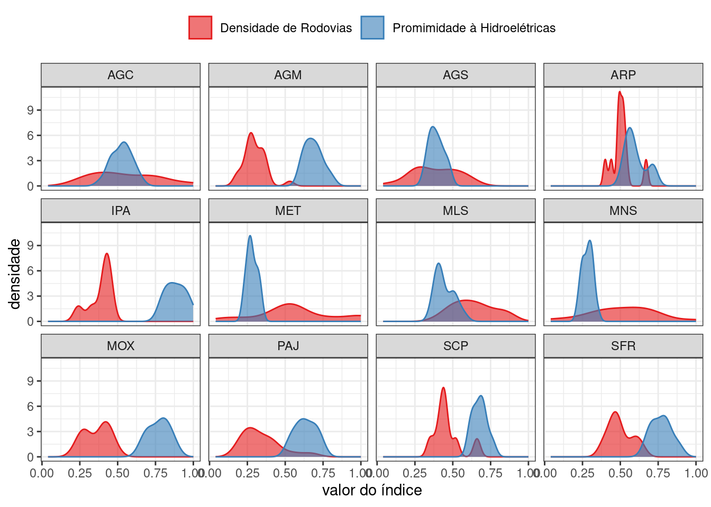
plot_grid(s_infra_grid, hist_infra_indic, ncol=2, align="vh", rel_widths = c(1,1),labels = c("","c"))Warning: Removed 1 row containing non-finite outside the scale range
(`stat_density()`).Warning: Graphs cannot be vertically aligned unless the axis parameter is set.
Placing graphs unaligned.Warning: Graphs cannot be horizontally aligned unless the axis parameter is
set. Placing graphs unaligned.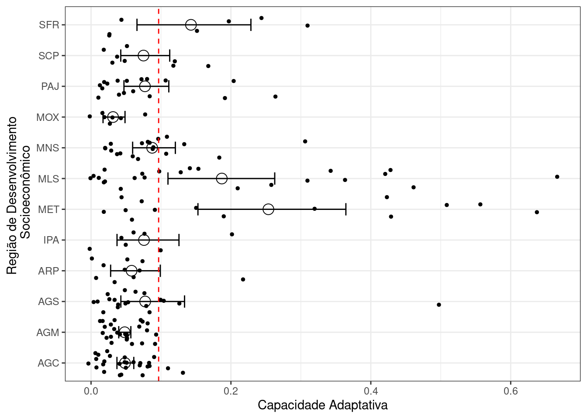
Conclusão:
Capacidade Adaptativa
Capacidade do ecossistema de se preparar e se ajustar às alterações climáticas ou aos danos climáticos potenciais para a integridade do bioma, principalmente para diminuir os impactos negativos, aproveitar as oportunidades ou responder às consequências. O Índice de Capacidade Adaptativa é composto pelo indicador temático: Instrumentos para conservação da biodiversidade.
Indicador composto por 2 variáveis: 1- Orientação para UC e 2 - UCs
cores_fixas_rev <- c("Muito Baixo" = "#f40000", "Baixo" ="#ff8300", "Médio" = "#ffcd00", "Alto" = "#a9de00", "Muito Alto" ="#02c650" )
dados_comp_geom %>%
mutate(categ=case_when(
s_cap <0.2 ~ "Muito Baixo",
s_cap >=0.2 & s_cap < 0.4 ~ "Baixo",
s_cap >=0.4 & s_cap < 0.6 ~ "Médio",
s_cap >=0.6 & s_cap < 0.8 ~ "Alto",
s_cap >=0.8 ~ "Muito Alto")) %>%
arrange(desc(s_cap)) %>%
#mutate(categ = fct_reorder(categ, desc(s_cap))) %>%
ggplot()+geom_sf(aes(fill=categ), show.legend = TRUE)+
scale_fill_manual(values=cores_fixas_rev, name = "")+theme_bw()+theme(legend.position = "bottom")+
labs(title = "Capacidade Adaptativa")->s_cap_map
s_cap_map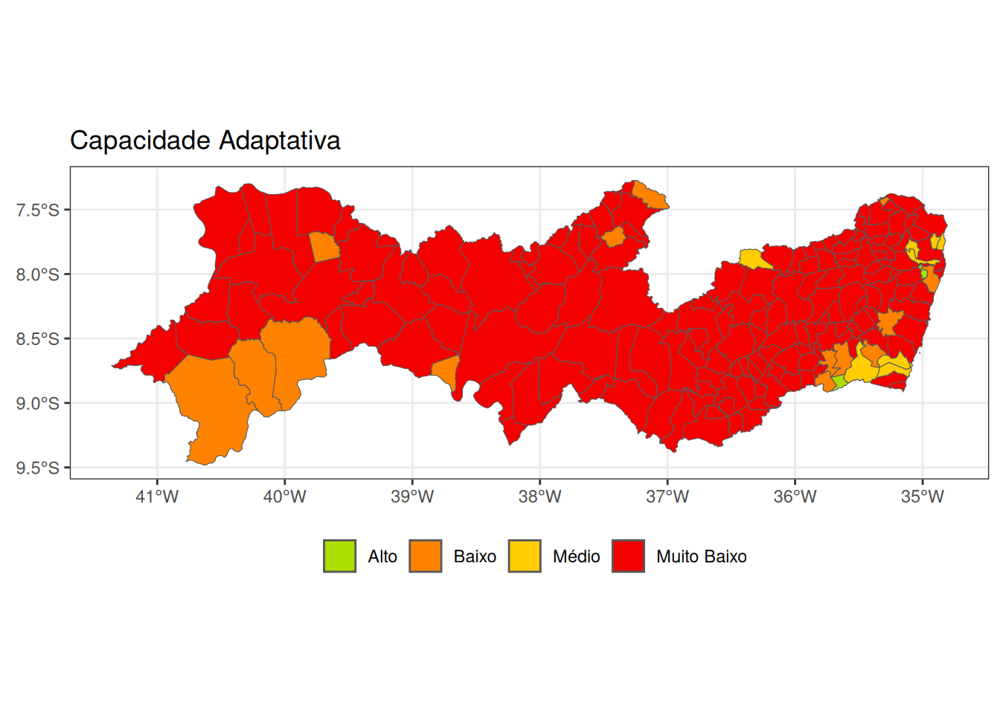
## Análise por RDS
dados_comp_geom %>%
mutate(categ=case_when(
s_cap <0.2 ~ "Muito Baixo",
s_cap >=0.2 & s_cap < 0.4 ~ "Baixo",
s_cap >=0.4 & s_cap < 0.6 ~ "Médio",
s_cap >=0.6 & s_cap < 0.8 ~ "Alto",
s_cap >=0.8 ~ "Muito Alto")) %>%
arrange(desc(s_cap)) %>%
mutate(categ = fct_reorder(categ, desc(s_cap))) %>%
ggplot(aes(rds,s_cap))+
geom_jitter(size=1)+
geom_errorbar(stat = "summary", fun.data = mean_cl_boot, width = 0.4)+
geom_point(size = 4, stat = "summary", fun = mean, shape = 1) +
#geom_errorbar(aes(ymin=media-sd, ymax=media+sd), width=.5,
# position=position_dodge(0.05))+
labs(x= "Região de Desenvolvimento \n Socioeconômico", y="Capacidade Adaptativa")+
geom_hline(yintercept = mean(dados_comp_geom$s_cap), col = "red", linetype="dashed")+
theme_bw()+coord_flip()->s_cap_graph
s_cap_graph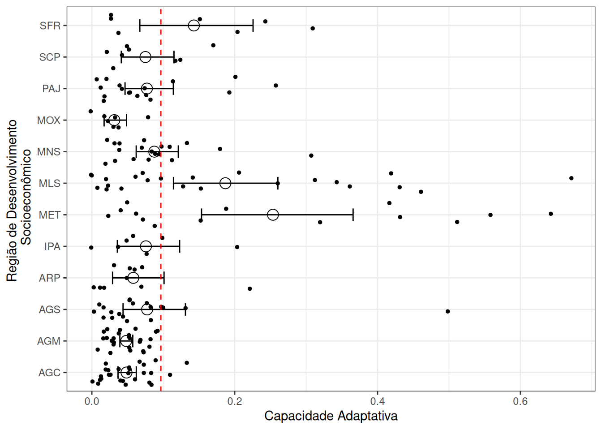
plot_grid(s_cap_map, s_cap_graph, ncol=1, align="v", rel_widths = c(1,0.6), labels = c("a","b"))->s_cap_grid
s_cap_grid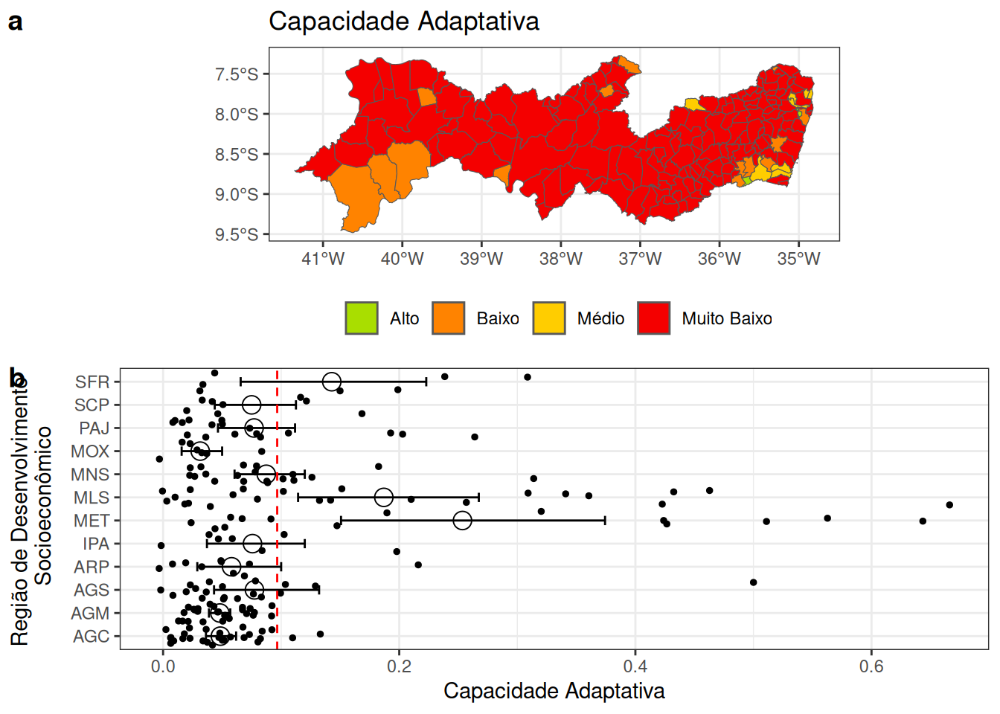
Conclusão: Poucas UCs e de baixa implementação (falta de comitê gestor) não ajudam na capacidade adaptativa dos bioma frente às mudanças climáticas.
Indicadores individuais - Capacidade Adaptativa
dados_comp_geom %>%
as_tibble() %>%
select(sc_orient:sc_ucons, rds) %>%
rename("Orientação Técnica"="sc_orient","Comitê Gestor de UCs"="sc_ucons") %>%
pivot_longer(cols=1:2, names_to="indic", values_to="value") %>%
ggplot()+geom_density(aes(value, colour = indic, fill=indic), alpha=0.6)+
scale_fill_brewer(palette="Set1")+
scale_color_brewer(palette="Set1")+
facet_wrap(.~rds)+
theme_bw()+theme(legend.position = "top", legend.title = element_blank())+labs(x="valor do índice",y="densidade")->hist_cap_indic
hist_cap_indicWarning: Removed 156 rows containing non-finite outside the scale range
(`stat_density()`).Warning: Groups with fewer than two data points have been dropped.
Groups with fewer than two data points have been dropped.Warning in max(ids, na.rm = TRUE): nenhum argumento não faltante para max;
retornando -Inf
Warning in max(ids, na.rm = TRUE): nenhum argumento não faltante para max;
retornando -Inf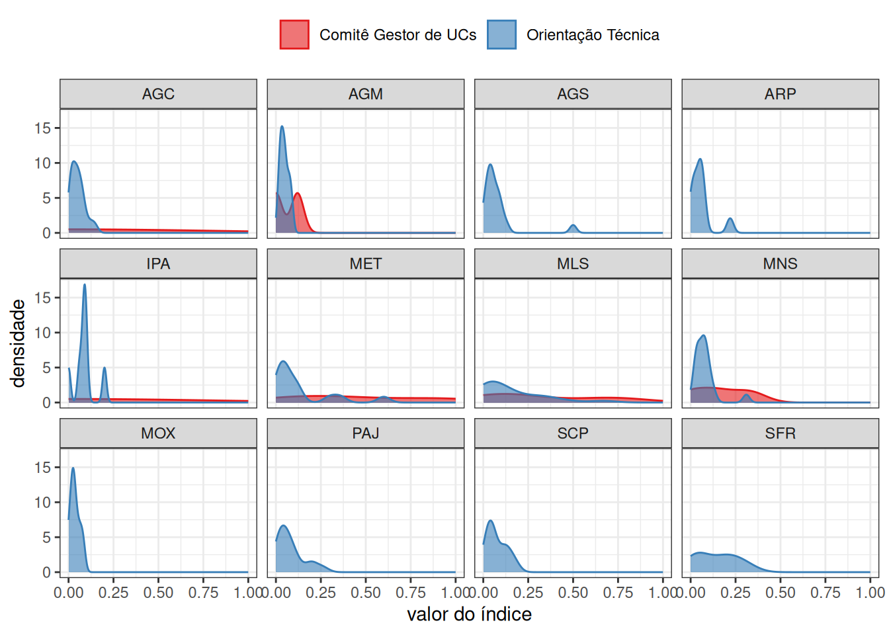
plot_grid(s_cap_grid, hist_cap_indic, ncol=2, align="vh", rel_widths = c(1,1),labels = c("","c"))Warning: Removed 156 rows containing non-finite outside the scale range
(`stat_density()`).Warning: Groups with fewer than two data points have been dropped.
Groups with fewer than two data points have been dropped.Warning in max(ids, na.rm = TRUE): nenhum argumento não faltante para max;
retornando -Inf
Warning in max(ids, na.rm = TRUE): nenhum argumento não faltante para max;
retornando -InfWarning: Graphs cannot be vertically aligned unless the axis parameter is set.
Placing graphs unaligned.Warning: Graphs cannot be horizontally aligned unless the axis parameter is
set. Placing graphs unaligned.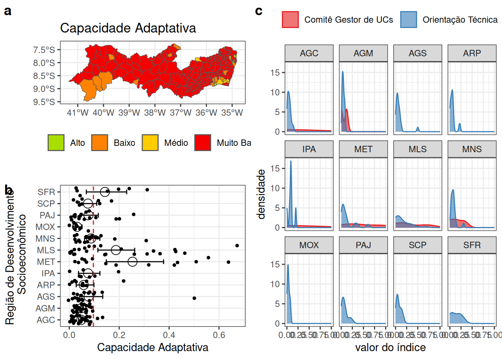
Conclusão: A maioria dos municípios, de todas as RDs possuem baixa capacidade adaptativa e apenas a Região Metropolitana e a Mata Sul possuem alguma capacidade mais ampla, devido basicamente às UCs com comitê gestor estabelecido.
Exposição
Refere-se à presença, distribuição e proximidade de elementos que são alvo de possíveis impactos climáticos, neste caso, elementos que compõem a integridade do bioma. A exposição a uma ameaça particular pode ser determinada independentemente da vulnerabilidade. O Índice de Exposição é composto pelo indicador temático: Cobertura natural exposta.
Indicador temático - Cobertura natural exposta
Cobertura natural exposta pode afetar a integridade do bioma, pois a maior exposição da cobertura natural pode reduzir a estrutura e funcionamento dos ecossistemas. O indicador temático Cobertura natural exposta é resultante da composição dos indicadores simples: Área protegida; Cobertura florestal ou formação natural não florestal; e Área prioritária para conservação.
Refere-se à presença, distribuição e proximidade de elementos que são alvo de possíveis impactos climáticos, neste caso, elementos que compõem a integridade do bioma. A exposição a uma ameaça particular pode ser determinada independentemente da vulnerabilidade. O Índice de Exposição é composto pelo indicador temático: Cobertura natural exposta.
dados_comp_geom %>%
mutate(categ=case_when(
expos <0.2 ~ "Muito Baixo",
expos >=0.2 & expos < 0.4 ~ "Baixo",
expos >=0.4 & expos < 0.6 ~ "Médio",
expos >=0.6 & expos < 0.8 ~ "Alto",
expos >=0.8 ~ "Muito Alto")) %>%
arrange(desc(expos)) %>%
#mutate(categ = fct_reorder(categ, desc(expos))) %>%
ggplot()+geom_sf(aes(fill=categ), show.legend = TRUE)+
scale_fill_manual(values=cores_fixas, name = "")+theme_bw()+theme(legend.position = "bottom")+
labs(title = "Exposição às Mudanças Climáticas")->expos_map
expos_map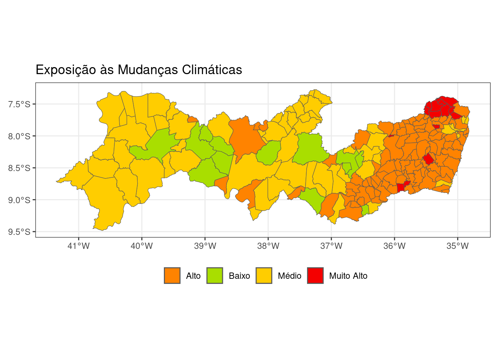
## Análise por RDS
dados_comp_geom %>%
mutate(categ=case_when(
expos <0.2 ~ "Muito Baixo",
expos >=0.2 & expos < 0.4 ~ "Baixo",
expos >=0.4 & expos < 0.6 ~ "Médio",
expos >=0.6 & expos < 0.8 ~ "Alto",
expos >=0.8 ~ "Muito Alto")) %>%
arrange(desc(expos)) %>%
mutate(categ = fct_reorder(categ, desc(expos))) %>%
ggplot(aes(rds,expos))+
geom_jitter(size=1)+
geom_errorbar(stat = "summary", fun.data = mean_cl_boot, width = 0.4)+
geom_point(size = 4, stat = "summary", fun = mean, shape = 1) +
#geom_errorbar(aes(ymin=media-sd, ymax=media+sd), width=.5,
# position=position_dodge(0.05))+
labs(x= "Região de Desenvolvimento \n Socioeconômico", y="Exposição às Mudanças Climáticas")+
geom_hline(yintercept = mean(dados_comp_geom$expos), col = "red", linetype="dashed")+
theme_bw()+coord_flip()->expos_graph
expos_graph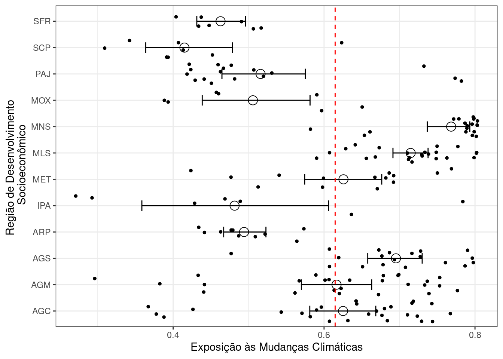
plot_grid(expos_map, expos_graph, ncol=1, align="v", rel_widths = c(1,0.6), labels = c("a","b"))->expos_grid
expos_grid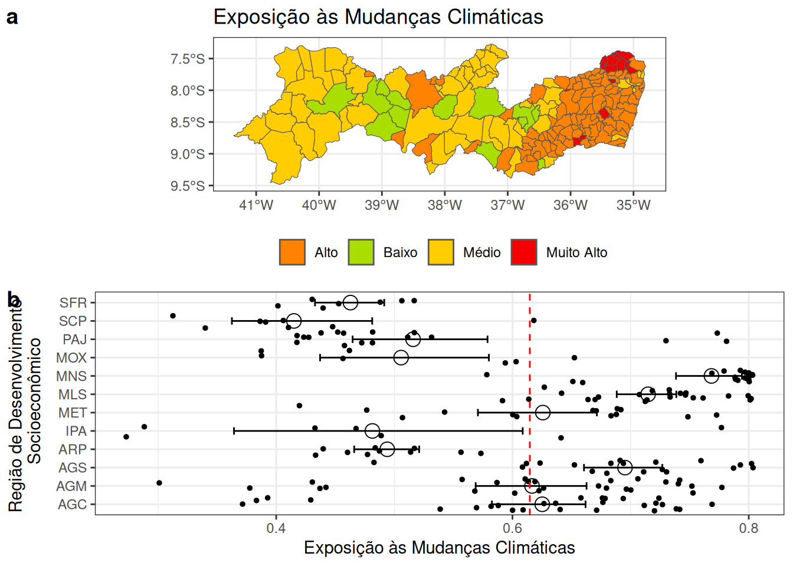
Conclusão: Poucas UCs e de baixa implementação (falta de comitê gestor) não ajudam na capacidade adaptativa dos bioma frente às mudanças climáticas.
Indicadores individuais - Exposição
dados_comp_geom %>%
as_tibble() %>%
select(e_cobnat:e_priocons, rds) %>%
rename("Vegetação remanescente"="e_cobnat","Proporção em UCs"="e_areaprot", "Proporção de áreas prioritárias"="e_priocons") %>%
pivot_longer(cols=1:3, names_to="indic", values_to="value") %>%
ggplot()+geom_density(aes(value, colour = indic, fill=indic), alpha=0.6)+
scale_y_continuous(limits = c(0, 10))+
scale_fill_brewer(palette="Set1")+
scale_color_brewer(palette="Set1")+
facet_wrap(.~rds)+
theme_bw()+theme(legend.position = "top", legend.title = element_blank())+labs(x="valor do índice",y="densidade")->hist_exp_indic
hist_exp_indic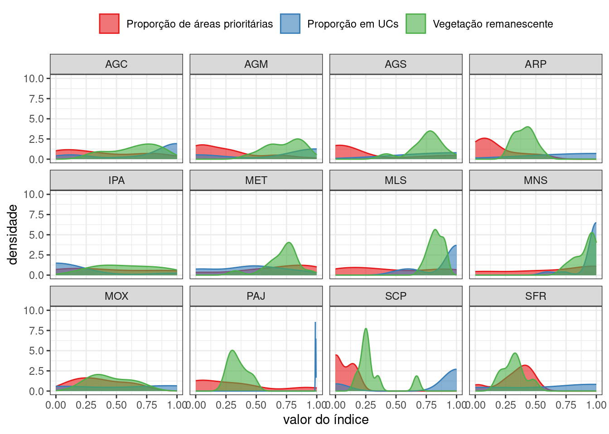
plot_grid(expos_grid, hist_exp_indic, ncol=2, align="vh", rel_widths = c(1,1),labels = c("","c"))Warning: Graphs cannot be vertically aligned unless the axis parameter is set.
Placing graphs unaligned.Warning: Graphs cannot be horizontally aligned unless the axis parameter is
set. Placing graphs unaligned.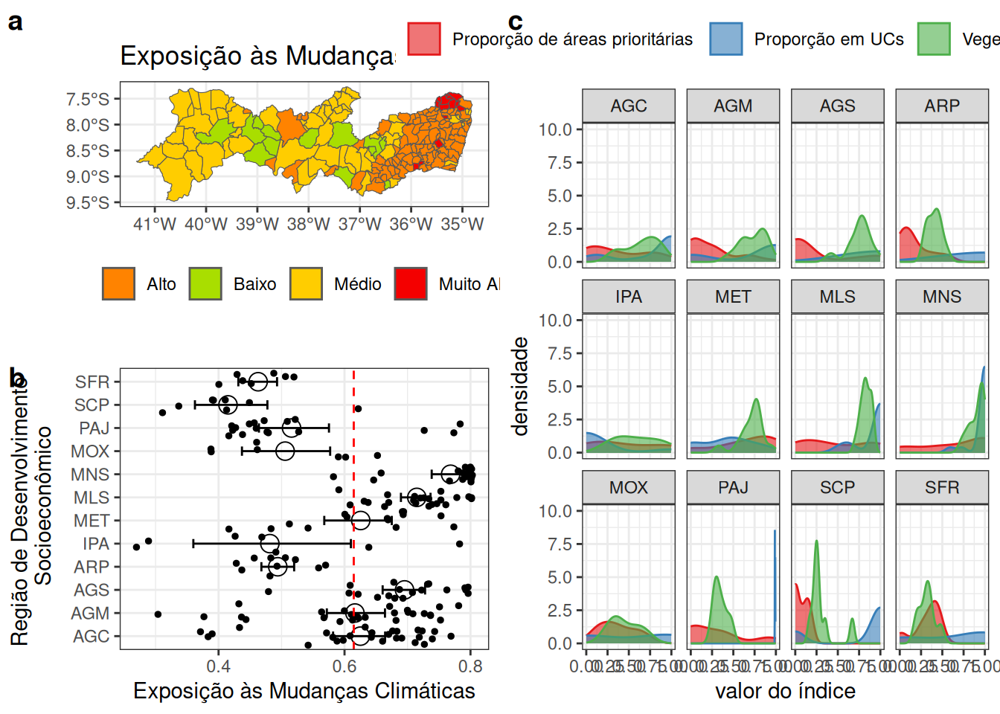
Valores médios de Vulnerabilidae pro RDS
\[ Vulnerabilidade = Sensibilidade+Exposição-Capacidade adaptativa \]
Grau de suscetibilidade do bioma a uma determinada ameaça climática. A vulnerabilidade refere-se às características que um determinado ecossistema possui que refletem à suscetibilidade dele em relação às variações climáticas que podem afetar, direta ou indiretamente, a integridade do bioma. A vulnerabilidade está vinculada a situação de sensibilidade e capacidade adaptativa desse sistema, ou seja, se baseia em fatores conjunturais existentes antes do impacto climático. (Fonte: Adapta Brasil)
## Todos os sub-índices
dados_comp_geom %>%
as_tibble() %>%
select(rds, sensib, s_cap, expos ) %>%
pivot_longer(!rds, names_to = "indic") %>%
group_by(rds, indic) %>%
summarise_if(is.numeric, list(mean, sd)) %>%
ggplot(aes(rds,fn1, color=indic))+
geom_point(size=3,position=position_dodge(width=0.7))+
scale_color_discrete(name= "",labels=c("Exposição", "Sensibilidade", "Capacidade Adaptativa"))+
geom_pointrange(aes(ymin=fn1-fn2, ymax=fn1+fn2),position=position_dodge(width=0.7))+
coord_flip()+
theme_bw()+
theme(legend.position = "top")+
labs(y="Valor do Índice", x="Região de Desenvolvimento Socioeconômico")->A
A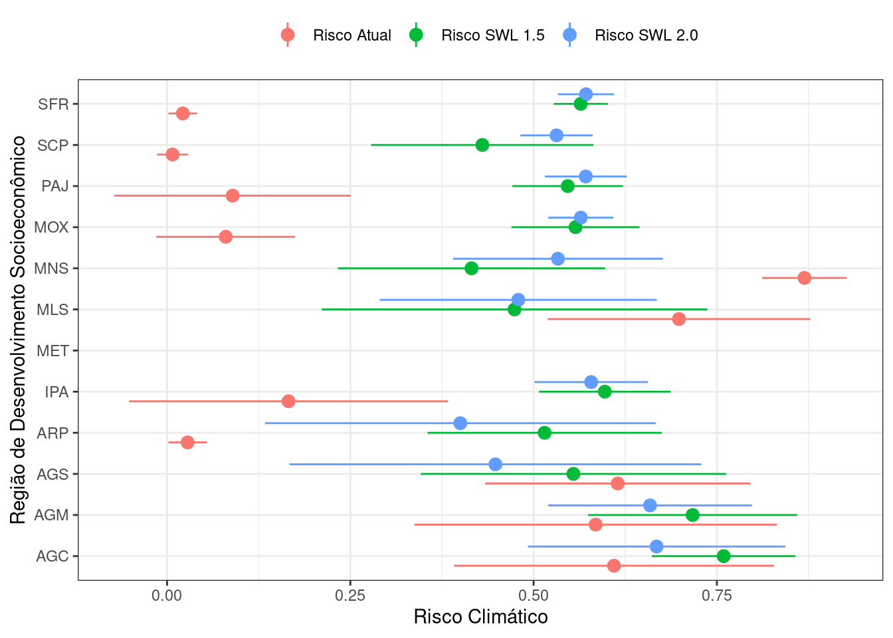
Nota-se aqui vários padrões:
Exposição é bastante variável entre e dentro das RDS, sugerindo que os municípios possuem contextos muito distintos que aumentam ou diminuem sua exposição ao risco climático
Sensibidade possui menor variação entre RDS mas algumas delas são compostas por municípios muito discrepantes (p.ex. MET e MLS )
A capacidade adapttiva é bastente uniforme entre as RDS com menor variação entre e dentro dos grupos, provavelmente indicando poucas variações nos indicadores individuais.
Risco Climático
Risco climático atual e projetado
dados_comp_geom %>%
as_tibble() %>%
select(rds,risco_atual:risco_SWL2.0) %>%
pivot_longer(!rds, names_to = "risco") %>%
group_by(rds, risco) %>%
summarise_if(is.numeric, list(mean, sd)) %>%
ggplot(aes(rds,fn1, group=risco, color=risco))+
geom_point(size=3,position=position_dodge(width=0.7))+
scale_color_discrete(name= "",labels=c("Risco Atual", "Risco SWL 1.5", "Risco SWL 2.0"))+
geom_pointrange(aes(ymin=fn1-fn2, ymax=fn1+fn2),position=position_dodge(width=0.7))+
coord_flip()+
theme_bw()+
theme(legend.position = "top")+
labs(y="Risco Climático", x="Região de Desenvolvimento Socioeconômico")->B
B
Ameaça à Integridade do Bioma
dados_comp_geom %>%
as_tibble() %>%
select(rds,ameaca_atual:ameaca_SWL2.0) %>%
rename("Ameaça Atual"="ameaca_atual","Ameaça SWL 1.5"="ameaca_SWL1.5", "Ameaça SWL 2.0"="ameaca_SWL2.0") %>%
pivot_longer(!rds, names_to = "ameaca") %>%
group_by(rds, ameaca) %>%
drop_na() %>%
summarise_if(is.numeric, list(mean, sd)) %>%
ggplot(aes(rds,fn1, group=ameaca, color=ameaca))+
geom_point(size=3,position=position_dodge(width=0.7))+
scale_color_discrete(name= "")+
geom_pointrange(aes(ymin=fn1-fn2, ymax=fn1+fn2),position=position_dodge(width=0.7))+
coord_flip()+
theme_bw()+
theme(legend.position = "top")+
labs(y="Ameaça à Integridade do Bioma", x="Região de Desenvolvimento Socioeconômico")->C
C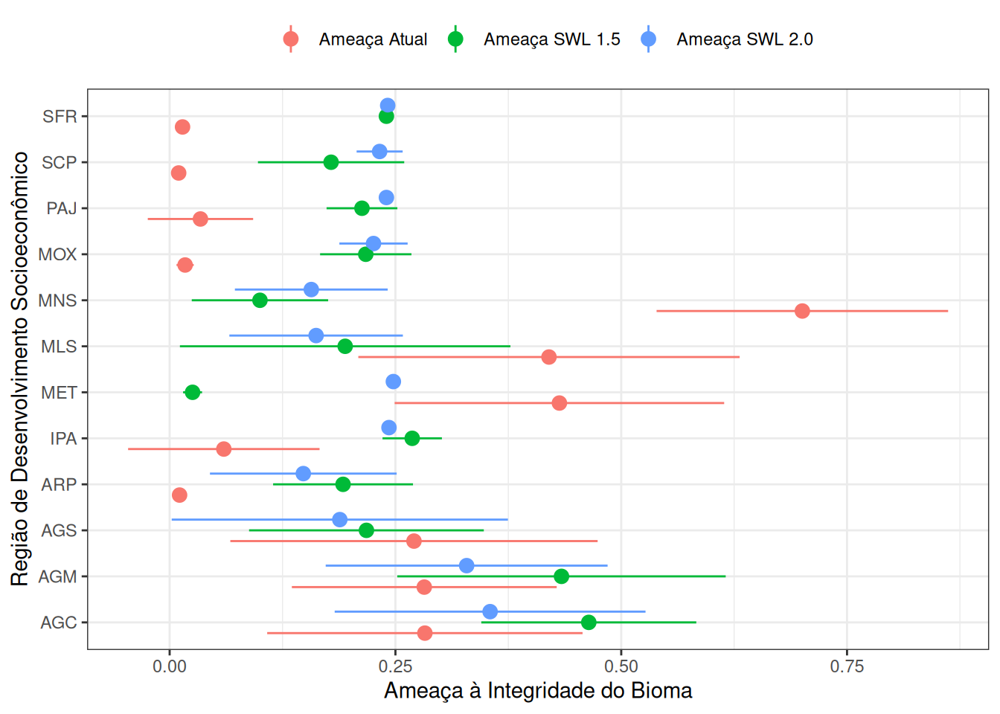
## Ameaça Atual